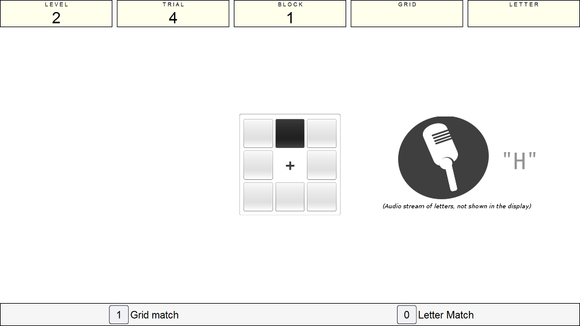
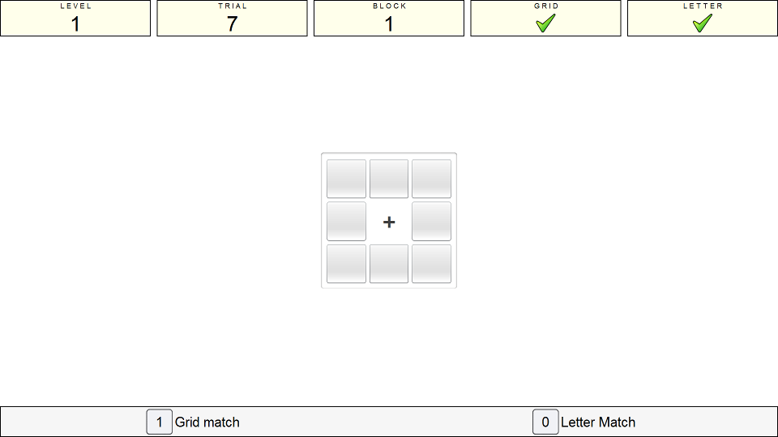

Instructions
Presentation Phase
This is the dual n-back task. In this task you will be required to keep track of two streams of information simultaneously! You will see a cross in the centre of the screen which indicates where you should look, this fixation point is surrounded by 8 squares.
When the task starts you will see one of these grids 'light up' every 3 seconds. At the same time as the grid lighting up you will also hear a letter through the headphones:

You need to try and remember the sequence of grids, and the sequence of letters so that you can respond appropriately. The aim of this task is to respond when either the newest grid is the same as the grid N items ago or when the letter matches the letter shown N items ago.
The value of N is the current level of difficulty and will always be present in the 'Level' box in the status panel.
Recall Phase
When you see a grid match you press the '1' key and when you hear a letter match you press the '0' key.
Example: If the current level of N is 2, then my pattern of response for the following letters should be:
| item number | item letter | Correct Action |
|---|---|---|
| 1 | "F" | Do nothing |
| 2 | "G" | Do nothing |
| 3 | "H" | Do nothing |
| 4 | "G" | Press the '0' key (because the letter 'G' was presented 2 items ago) |
| 5 | "H" | Press the '0' key (because the letter 'H' was presented 2 items ago) |

The 'GRID' and 'LETTER' boxes in the status panel will give you feedback on whether you responded to the stimulus correctly (each will flash with a green tick or a red x depending on accuracy) as shown in the above image.